Physics Homework 12
Sources of magnetic fields · Worked solutions
All 10 assigned questions. Setup, substitution and final answers.
Question 128.29 · Force between opposite currents
Two long wires 0.400 m apart carry 5.00 A rightward and 2.00 A leftward. Consider 1.20 m of each wire. Find the force and whether it attracts; then double both currents.
Original question
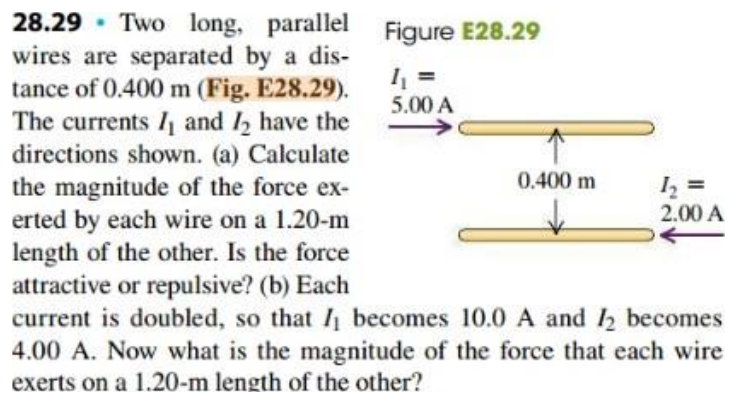
Open the original D2L handout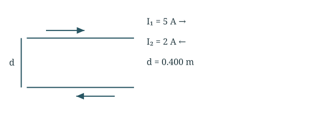
One wire’s field acts on the other: F/L = μ₀I₁I₂/(2πd).
Find the force on either wire
Double both currents
Final answer
6.00 µN repulsive; doubled currents give 24.0 µN.
Opposite currents repel. The two forces have equal magnitudes and opposite directions.
Question 228.34 · Field from a semicircular wire
Current I enters from the left, runs clockwise around an upper semicircle of radius R, then exits rightward along the same diameter line. P is the arc centre. Find B at P, including straight sections.
Original question
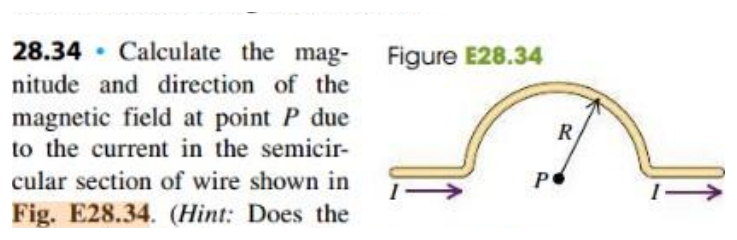
Open the original D2L handout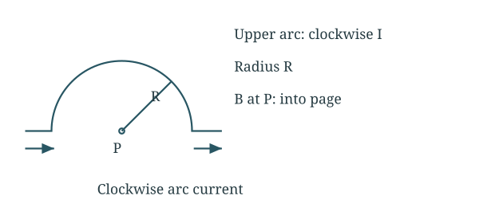
Straight radial sections have dl parallel to the vector toward P and contribute zero.
Evaluate the straight sections
Integrate the semicircle
Final answer
B = μ₀I/(4R), into the page.
Clockwise current makes B point into the page. This is half the field of a complete loop of the same R and I.
Question 328.40 · Ampère integrals
I₁ = 4 A into page, I₂ = 6 A out, I₃ = 2 A out. Counterclockwise paths: a encloses none; b only I₁; c I₁+I₂; d all three. Find ∮B·dl for each path.
Original question
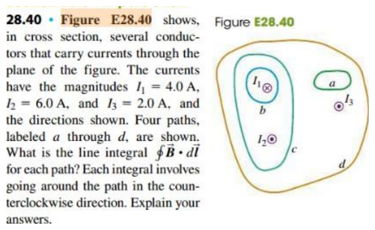
Open the original D2L handout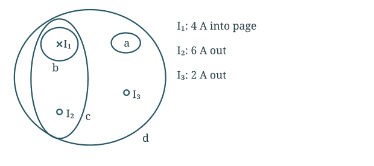
Counterclockwise traversal makes outward current positive.
Count the signed currents
Apply Ampère’s law
Final answer
a: 0; b: −5.03 × 10⁻⁶; c: +2.51 × 10⁻⁶; d: +5.03 × 10⁻⁶ T m.
A zero integral does not imply zero field everywhere on the path. Shape and perimeter do not affect this steady-current result.
Question 428.43 · Coaxial cable field
Solid conductor radius a and outer tube inner/outer radii b,c carry equal currents I in opposite directions, uniformly distributed. Derive B for a < r < b and r > c.
Original question
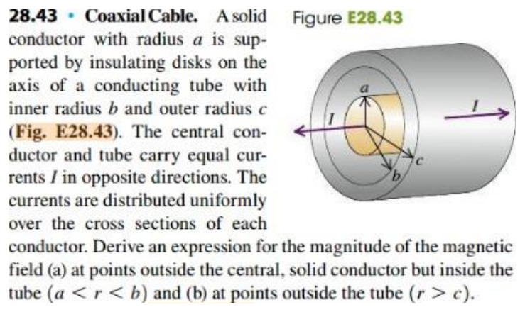
Open the original D2L handout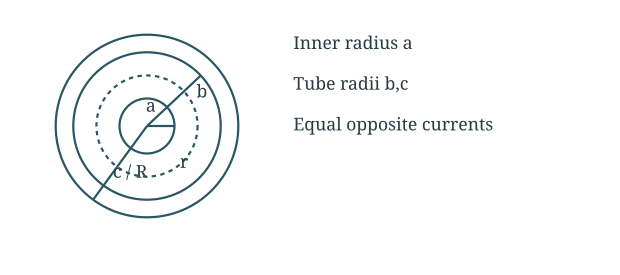
Use circular Amperian paths and the net enclosed current.
Between the conductors
Outside both conductors
Final answer
Between: μ₀I/(2πr); outside: 0.
Between conductors, field is azimuthal with direction from the inner-current right-hand rule. Exterior cancellation depends on equal opposite currents and ideal long coaxial geometry.
Question 528.57 · Where two-wire fields cancel
Long wires 0.400 m apart carry 25.0 A and 75.0 A. Find all zero-field locations for same-direction and opposite-direction currents.
Original question
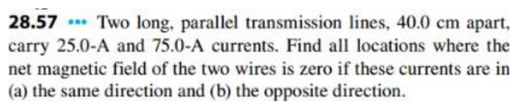
Open the original D2L handout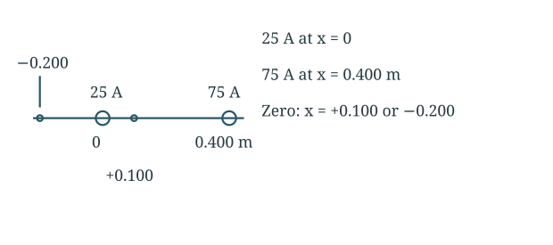
Equal magnitudes are not enough: fields must oppose at the candidate location.
Same-direction currents
Opposite-direction currents
Final answer
Same: 0.100 m between; opposite: 0.200 m outside the 25 A wire.
Each solution extends along a line parallel to the wires. There is no cancellation outside for same directions or between for opposite directions.
Question 628.61 · Overhead bus cables
Bus input power 65 hp, cable voltage 600 V, separation 0.55 m. Use 1 hp = 746 W. Find current and force per unit length.
Original question
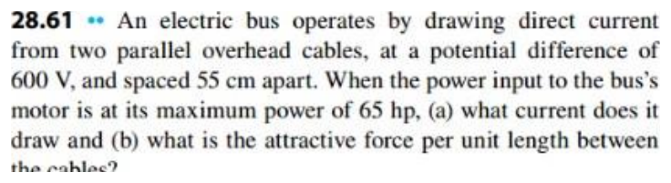
Open the original D2L handoutUse input power P = VI, then the parallel-wire force formula.
Convert power and find current
Find force per length
The supply and return currents run in opposite directions, so the wires repel. The handout calls this force attractive; its magnitude is the value calculated here.
Final answer
80.8 A; 2.38 × 10⁻³ N/m, repulsive for supply/return cables.
Question 728.62 · Field on the symmetry axis
Wires at (0,+a) and (0,−a) carry equal I, respectively out of and into the page. Observe P = (x,0). Draw each field and net field, derive B(x), graph it, find its maximum and far-field limit.
Original question
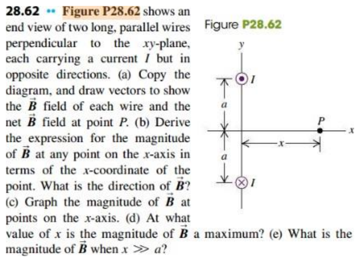
Open the original D2L handout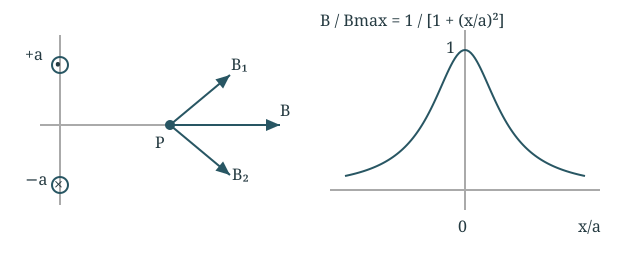
The y components cancel; the x components add.
Add the field components
Find the maximum and far-field limit
Final answer
B = μ₀Ia/[π(x²+a²)] along +x; peak at x = 0; far field ∝ 1/x².
The graph is even in x, peaks at zero and falls toward zero on either side. At x > 0 the upper wire field tilts up-right and lower wire field down-right.
Question 828.64 · Force on a loop beside a wire
Long wire carries 14.0 A rightward. Loop below it carries 5.00 A clockwise, horizontal length 0.200 m. Top edge is 0.0260 m from wire; bottom edge is 0.100 m from wire. Find net force on the loop.
Original question
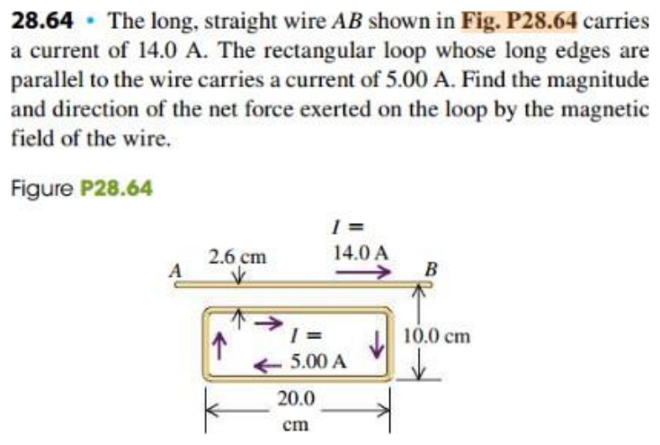
Open the original D2L handout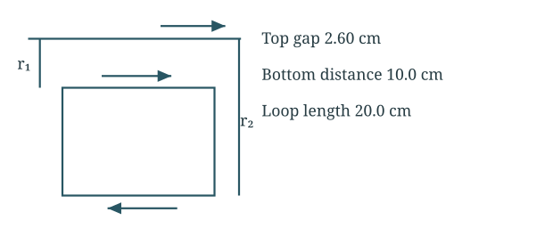
Opposing horizontal-side forces differ because B decreases with distance; vertical-side forces cancel.
Find the forces on the horizontal sides
Subtract the opposing forces
The two vertical sides have equal and opposite horizontal forces at each height, so those forces cancel.
Final answer
7.97 × 10⁻⁵ N toward the wire.
The near edge has current parallel to the wire and is attracted more strongly, so net force is upward toward the wire. The 10.0 cm label is wire-to-bottom distance.
Question 928.65 · Suspended current-carrying wires
Two opposite-current wires hang from common supports on 0.0400 m cords, each 6.00° from vertical. Mass per wire length λ = 0.0125 kg/m. Find the equal current magnitude.
Original question
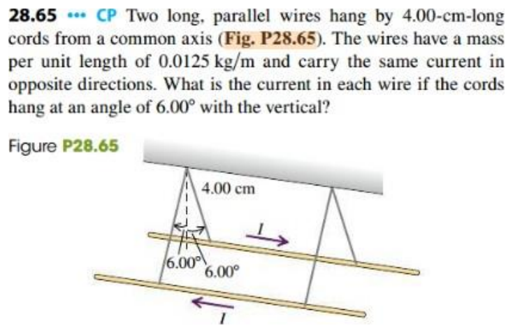
Open the original D2L handout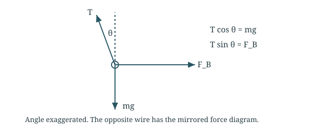
Magnetic repulsion balances the horizontal tension component.
Find the wire separation
Use the free-body diagram
Final answer
23.2 A per wire, in opposite directions.
Use the separation of both wires, 2ℓ sinθ, not the displacement of only one.
Question 1028.72 · Cancel a loop’s centre field
Clockwise circular loop radius R carries I₂. Its centre is distance D above a long horizontal wire carrying I₁. Find I₁ magnitude and direction for zero field at the loop centre.
Original question
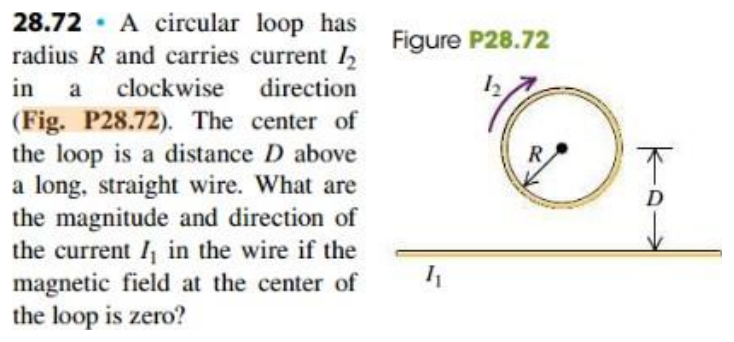
Open the original D2L handout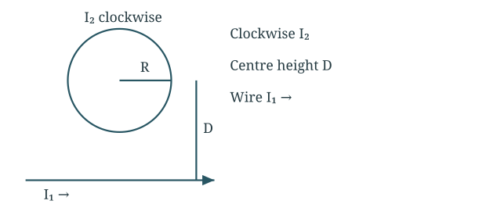
The loop’s inward field must be cancelled by the wire’s outward field.
Set the field magnitudes equal
Final answer
I₁ = πDI₂/R, rightward.
For a rightward wire current the field above it is out of the page. Cancellation is at the centre, not throughout the loop area.